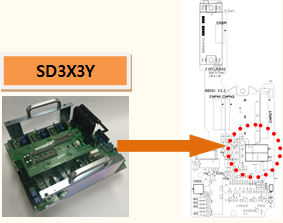
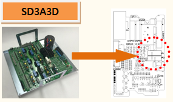
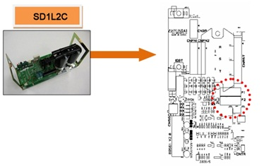
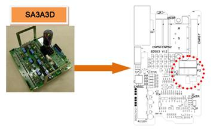
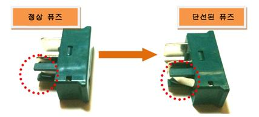

기존 에러코드: E0034 AMP의 과전류 발생
1.1.60.1. 개요
서보 구동장치에 공급되는 3상 전압(R, S, T)에 과전압 또는 서지전압의 유입으로 인해 서지보호기에 과전류가 흘러서 보호용 퓨즈가 단선되었습니다.
1.1.60.2. 원인 및 점검방법
|
서보 앰프에 서지전압 유입으로 F1 또는 F2가 단선되었습니다.
(1) 서보 구동장치의의 퓨즈를 점검하여 주십시오. n 서보 구동장치의 퓨즈 단선 여부를 확인하십시오.
<퓨즈가 단선되지 않은 경우> (2) 과전류 에러 검지 관련 케이블을 점검하여 주십시오. n CNSGC 케이블을 교체한 후 점검하여 주십시오. (3) 과전류 에러 검지 관련 부품을 점검하여 주십시오. n BD530/BD531 보드를 교체한 후 점검하여 주십시오. n 서보 구동장치를 교체한 후 점검하여 주십시오.
<퓨즈가 단선된 경우> : E02510 AMP AC 입력전압 고전압 – 퓨즈 단선 |
(1) 서보 구동장치의 퓨즈를 점검하여 주십시오.
AMP의 과전류(over-current) 에러는 입력되는 3상 전압이 사양을 초과하는 경우에 다이오드 모듈에서 검지합니다. 발생된 에러는 CNSGC 케이블을 통하여 BD530/BD531보드에서 처리합니다.

(a) Hi5a-S00 제어기 (SD3X3Y)

(b) Hi5a-S30 제어기 (SD3A3D)

(c) Hi5a-N00 제어기 (SD1L2C)

(d) Hi5a-N30 제어기 (SA3A3D)
그림 1.171 AMP 과전류 검지 퓨즈 위치

그림 1.172 AMP 과전류 검지 퓨즈의 단선 형태
(2) 과전류 에러 검지 관련 케이블을 점검하여 주십시오.
n CNSGC 케이블 교체 점검
CNSGC 케이블을 정상품과 교체하여 에러가 발생하지 않으면 케이블의 접속 불량입니다. CNSGC 케이블을 정상품으로 교체하여 사용하시기 바랍니다.
(3) 과전류 에러 검지 관련 부품을 점검하여 주십시오.
n BD530/BD531 교체 점검
BD530/BD531을 정상품과 교체하여 에러가 발생하지 않으면 해당 보드의 불량입니다. BD530/BD531을 정상품으로 교체하여 사용하시기 바랍니다.
n 서보 구동장치의 교체 점검
AMP의 과전류 에러를 검지하는 모듈은 다음과 같습니다.
Ø Hi5a-S제어기
l 중형 로봇용 서보 구동장치: SD3X3Y
l 소형 로봇용 서보 구동장치: SD3A3D
Ø Hi5a-N제어기
l 중형 로봇용 다이오드 모듈 : SD1L2C
l 소형 로봇용 서보 구동장치 : SA3A3D
현재 사용 중인 제어기의 구성품을 확인하신 후 점검하시기 바랍니다. 정상품과 교체하여 에러 재발 여부를 확인하여 주십시오.